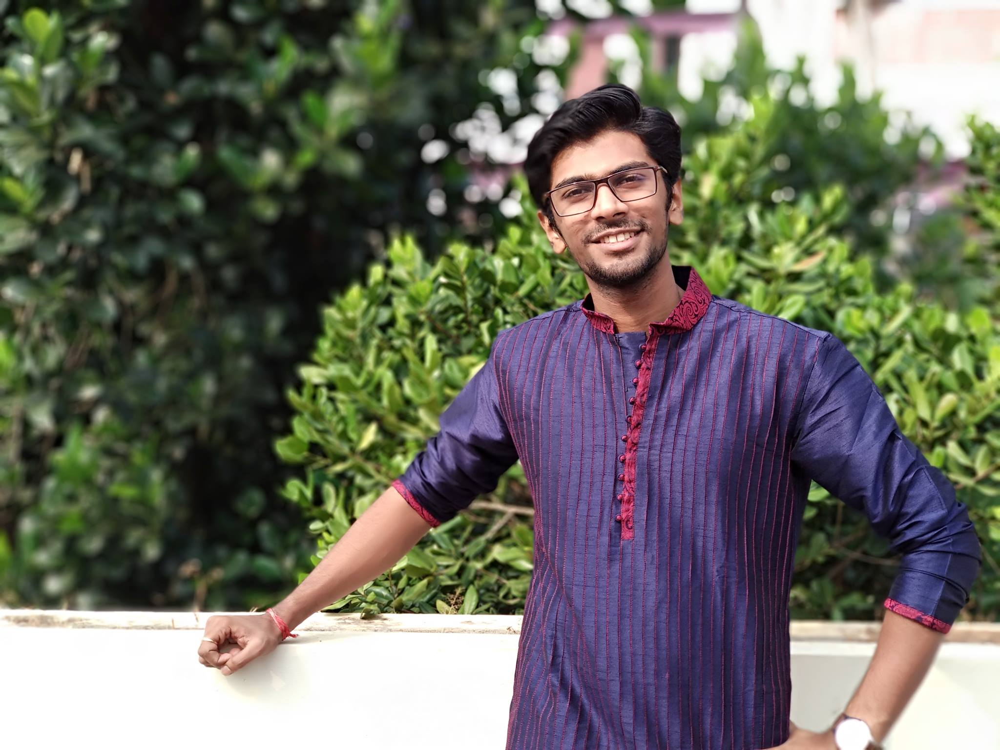

# Harikrishnan N. B.

- I am currently working as a Research Associate, [Consciousness Studies Programme]([https://niasconsciousnesscentre.org/), School of Humanities, National Institute of Advanced Studies (NIAS), Indian Institute of Science Campus, Bengaluru. (July 2018 - Present). I am also pursuing my PhD with the guidance of [Dr. Nithin Nagaraj](https://sites.google.com/site/nithinnagaraj2/), Associate Professor, NIAS. My PhD topic is "Investigations into Learning Algorithms in Intelligent Machines".
- I completed my M.Tech degree (July’27 2016 – Aug 2018) in Computational Engineering and Networking at [Center for Computational Engineering and Networking](https://www.amrita.edu/center/computational-engineering-and-networking), Amrita School of Engineering, Amrita Vishwa Vidyapeetham, Coimbatore, Tamil Nadu.
- I completed my B.Tech (2012- 2016) in Electronics and Communication Engineering ["ECE"](https://www.amrita.edu/school/engineering/amritapuri/electronics-and-communication), Amrita School of Engineering, Amritapuri Campus in Kerala.